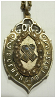

В 1871 г. Главное управление военно-учебных заведений приняло решение перевести Пермскую военную прогимназию в один из приволжских городов. Директор гимназии обратился с предложением принять прогимназию к симбирскому губернатору, однако в 1872 г. Симбирское земское собрание, среди депутатов которого были писатель И.А. Гончаров, поэт Н.М. Языков, крупные землевладельцы-меценаты Д.И. Воейков и Ф.М. Дмитриев, пришло к убеждению, что в Симбирске следует открыть не прогимназию, а военную гимназию, и обратилось с соответствующим ходатайством в Главное управление военно-учебных заведений. Там с пониманием отнеслись к предложению Симбирского губернского земства, и 21 апреля 1873 г. последовало высочайшее повеление об устройстве Симбирской военной гимназии.
Здание Симбирского кадетского корпуса. Почтовая открытка. 1900-е гг.
28 июня 1875 г. вышло постановление Военного совета о строительстве в Симбирске здания для военной гимназии. К концу сентября 1877 г. здание было готово и 9 октября передано гимназии.
Здание было построено по последнему слову техники. В нем были устроены приспособления для водяного отопления, искусственной вентиляции и увлажнения воздуха. Помещения были прекрасно отделаны. Повсюду были постелены паркетные полы. Здание корпуса по-праву считалось одним из лучших в городе.

Жетон Симбирского кадетского корпуса
22 июля 1882 г. Симбирская военная гимназия была преобразована в Симбирский кадетский корпус. Старшинство корпуса было определено датой принятия решения об учреждении в Симбирске военной гимназии – 8 сентября 1873 г. Этот день стал корпусным праздником. В 1903 г. корпусу было пожаловано знамя.
В 1915 г., когда в ходе Первой мировой войны возникла угроза оккупации Полоцка немцами, знамя Полоцкого корпуса было перевезено в Симбирск и помещено в церковь Симбирского кадетского корпуса.